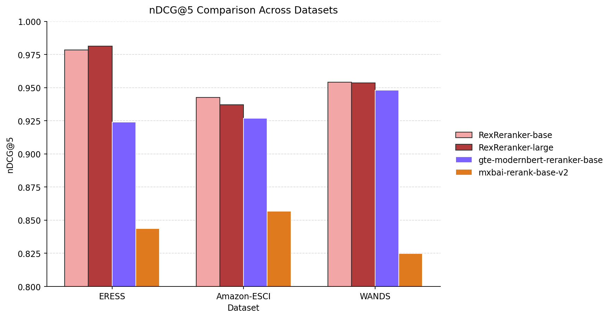

RexRerankers: SOTA Rankers for Product Discovery and AI Assistants
Jan 24, 2026
TL;DR
We introduce RexRerankers, a family of state-of-the-art rerankers that estimate how relevant an e-commerce product is for a given query. We open-source Amazebay, a large-scale dataset collection for training and evaluating product relevance models:
- Amazebay-Catalog: product metadata for 37M items across categories
- Amazebay-Relevance: 6M query–product pairs with graded relevance scores, covering ~364k unique queries and ~3M products
For holistic evaluation of product discovery rerankers, we also release ERESS (E-commerce Relevance Evaluation Scoring Suite): 4.7k unique queries and 72k labeled query–product pairs designed to reflect real shopping search behavior.
Finally, we open-source a training recipe for efficient, high-performing rankers using a Distributional-Pointwise Loss that treats annotation noise as signal rather than purely as error, improving robustness and calibration in real-world relevance modeling.
Introduction
Search in modern systems is a multi-stage decision pipeline optimized for speed, relevance, and user satisfaction. Whether you’re building web search, enterprise search, or product search, the dominant architecture is:
- Candidate generation (retrieval): quickly fetch a few hundred to a few thousand potentially relevant items from millions
- Reranking: apply a stronger model to reorder those candidates by relevance
- Post-processing & business logic: enforce constraints (availability, compliance, diversity), personalize, and format results
E-commerce search looks like “search” but the definition of relevance is richer and more constrained. A product can match the query text and still be a bad result due to:
- Variant and attribute mismatch: size, color, material, compatibility, fit
- Category intent: “running shoes” vs “shoe laces,” “sofa” vs “sofa cover”
- Brand sensitivity: explicit (“Nike”), implicit (“Apple charger”), or excluded (“no ads,” “non-branded”)
- Query language is messy: shorthand, typos, multi-intent queries, and colloquial attributes (“work bag that fits 16 inch laptop”)
RexRerankers were built for this modern product discovery setting: high-recall retrieval + strong reranking, optimized for e-commerce semantics. The goal is to make reranking models that are:
- Accurate on fine-grained product relevance
- Robust to noisy or ambiguous supervision
- Practical to deploy with latency and cost constraints
- Capable of handling indirect utility queries
Data Curation
We construct Amazebay via a multi-stage pipeline that combines large-scale catalog normalization, controlled synthetic query generation, embedding-driven sampling, high-recall candidate retrieval, and LLM-based graded relevance annotation with aggressive quality control and leakage prevention.
We bootstrap the product corpus from the Amazon 2023 Item-Review Snapshot released by UC San Diego. Starting from the raw item metadata, we perform a two-level deduplication pass to obtain a canonical catalog of 37M unique products:
- Exact duplicate removal: deterministic normalization (Unicode NFKC, whitespace collapse, punctuation stripping), followed by hashing of canonicalized structured fields (title, brand, category path, key attributes).
- Near-duplicate consolidation: approximate similarity joins over text fields using locality-sensitive signatures (MinHash) to collapse minor formatting or templating differences.
- Schema harmonization: all product records are mapped into a unified schema with explicit field boundaries (title, brand, category, features, description), allowing controlled ablation studies (title-only vs full-text representations) downstream.
This step is critical for preventing annotation waste on redundant items and for keeping retrieval distributions stable under scale.
To ensure broad coverage of shopping intents (including long-tail and under-specified queries), we generate synthetic queries using GPT-OSS-20B under a constrained generation protocol. We explicitly stratify query generation into six intent families: Attribute-rich (high feature density), Navigational (brand/store/product-line seeking), Gift & audience-specific (recipient + occasion), Generic (category-level intent with minimal attributes), Utility (task/solution), Short & Books (very short head queries + targeted books).
Operationally, each family is produced via templated instruction sets that control attribute cardinality and value realism (e.g., size ranges, compatibility tokens), lexical noise (typos, shorthand, omitted units), query length distribution. We also apply lightweight sanity filters to remove malformed outputs.
We embed all queries using embeddinggemma-300M and perform semantic clustering per query family to avoid over-representing near-paraphrases. The objective is to build a query set with high semantic entropy while preserving the natural frequency of coarse intents.
We embed a large pool of candidates (on the order of 110M unique queries). For each query family, we cluster in embedding space, then select cluster representatives to preserve diversity while keeping annotation budgets tractable. Sampling is stratified across families and across cluster sizes to avoid collapse into dominant intent modes. This stage is what converts “a lot of generated text” into a controlled, coverage-oriented evaluation/training distribution.
We embed products using the same embedding model, with two distinct product views to improve recall under heterogeneous query styles:
- Index A (Title-only): embeddings derived from title (and optionally brand tokens) to favor navigational/head queries.
- Index B (Full text): embeddings derived from title + description + bullet_features + structured attributes to favor attribute-rich/utility queries.
To operate at tens of millions of items, we apply dimension reduction to 256 (MRL trained embeddings), then build FAISS vector indices. We retrieve a recall set by taking:
- top-128 candidates from Index A
- top-128 candidates from Index B
- union → 256 candidates/query (deduplicated by product text)
![Flow diagram of the Amazebay pipeline. On the left, the Amazon 2023 Item-Review Snapshot feeds catalog normalization: raw item metadata, exact dedup, near-dup consolidation, schema harmonization, canonical catalog. On the right, synthetic query generation (generator LLM, generate synthetic queries, constrained templates, sanity filters) feeds embedding-driven sampling: embed queries, cluster, select representatives, query set. The catalog and the query set meet in high-recall retrieval: embed products, two product views, Index A and Index B, top 128 from each, union and dedup. The result goes to LLM graded relevance: LLM council, label and score, QC and decontamination, Amazebay.](img/amazebay-data-pipeline.png)
This dual-index design intentionally trades a small amount of extra retrieval compute for significantly higher recall across query families that rely on different evidence (short lexical cues vs attribute-heavy semantics).
Each (query, product) pair in the recall set is scored by an ensemble “council” of LLMs:
- GPT-OSS-120B
- Qwen3-32B (reasoning-enabled)
- Olmo-3.1-32B-Think
Rather than generating long rationales, we use structured relevance prompts that force the model to emit a single discrete label as the first token. We then take the logits of that first generated token to obtain a calibrated scalar relevance score with minimal decoding overhead.
Practical advantages of this approach:
- avoids long-form generation latency,
- reduces variance from free-form outputs,
- enables uncertainty estimation using logit margins/entropy
We apply multiple layers of filtering and postprocessing to ensure the resulting datasets reflect true relevance rather than obvious artifacts:
- Candidate-level pruning: remove trivially irrelevant pairs using high-precision heuristics
- Deduplication across splits: ensure no duplicate query strings and no duplicate product ids leak across training vs evaluation
- Semantic decontamination: prevent inadvertent overlap between benchmark and training distributions by removing benchmark queries (and/or query paraphrases) that are semantically too close to training queries under embedding similarity thresholds. This guards against “semantic contamination” where evaluation becomes a nearest-neighbor lookup of training supervision rather than a generalization test.
Training Methodology
Pointwise Classification Rerankers
Relevance supervision in e-commerce is inherently noisy, ambiguous, and heteroscedastic. The same query–product pair can receive different grades depending on who labels it or which model labels it. If we force the model to learn a single true scalar target as if the label were perfectly precise, the model tends to overfit annotation artifacts and produce brittle score boundaries.
To better reflect the real data-generating process, we use a two-phase training schedule:
- Phase 1: Distributional training (train backbone + head)
The model is trained to predict a full probability distribution over relevance grades (not just a single score). This helps the backbone learn representations that capture both expected relevance and uncertainty / ambiguity. - Phase 2: Scalar alignment (freeze backbone, train new MSE head only)
The distributional head is removed and replaced by a scalar regression head trained with MSE. The backbone is frozen, so Phase 2 only adapts the output interface to match downstream systems that expect a single score, without changing the learned representation. The step makes the model adaptable to usage with standard frameworks.
Phase 1
Distributional target representation (ordered relevance bins)
Instead of representing relevance as a discrete class or scalar, we define B=11 ordered bin centers in [0,1] (uniformly spaced). Each labeled grade in [0,1] is mapped into a truncated, renormalized Gaussian over bin centers:
and then normalized:
This converts a single label into a soft target that preserves ordinal structure and allows supervision to encode nearby relevance.
Ambiguity modeling via a variational spread (“ambiguity knob”)
A fixed sigma collapses to near one-hot classification when too small, and becomes overly diffuse (weak gradients, poor identifiability) when too large. We therefore explicitly treat sigma as a noise-as-signal control, and introduce a score-dependent spread schedule to model non-uniform ambiguity in relevance labeling.
Empirically, judgment is most fluid around transition regions (e.g., borderline “good vs great”), while extremes are more stable.
Intuitively:
- near decision boundaries → larger sigma → softer supervision (acknowledge ambiguity)
- near clear positives/negatives → smaller sigma → sharper supervision (reward certainty)
Let the transition set be:
Define the distance to the nearest transition:
Use a smooth “closeness to boundary” bump (Gaussian/RBF):
Then define dynamic sigma:
This produces targets that are heteroscedastic by design, matching the real annotation process more closely than uniform smoothing.
σ rises near the transitions 0.2, 0.5 and 0.8
near a transition the target is spread over neighbouring bins
far from one it is close to one-hot
KL divergence for distribution alignment
We optimize a distributional loss:
Outcome of Phase 1: The backbone learns representations that support:
- accurate relevance prediction
- calibrated uncertainty
Phase 2: Scalar alignment with frozen backbone (remove distributional head, add MSE head)
Distributional training is powerful for learning robust representations, but many production systems and ranking pipelines ultimately need a single scalar score:
- for blending with other signals
- for thresholds / filtering
- for straightforward scoring in reranking
Instead of forcing the distributional model to serve as the production interface, we convert it into a scalar scorer using a careful alignment step that does not disturb the backbone.
The procedure is undertaken in 3 main steps:
- Remove the distributional head
- Add a scalar regression head
- Freeze the backbone, train only the new head
This design prevents Phase 2 from unlearning the robust features acquired during distributional training. We train the scalar head using mean squared error against the original scalar label.
Generative Rerankers
In addition to classification-style encoder rankers, we introduce RexReranker-0.6B, a decoder-based generative reranker built on the Qwen3-Reranker-0.6B backbone. The scoring interface follows a generative reranking formulation: given a prompt containing (q, p), the model emits a binary judgment token (yes/no). The relevance score is derived from the model’s token-level posterior, i.e., the normalized probability (or logit) assigned to the yes token under the next-token distribution.
Specifically, we apply an MSE objective on the yes-token logit (optionally temperature-scaled) against our ground-truth graded relevance score (or its monotonic transform). This yields a lightweight, stable optimization signal while preserving the decoder reranker’s ability to understand deep semantic connections between query and product details.
Empirically, this training approach produces a model that outperforms existing open-source generative rerankers on our evaluation suite, establishing state-of-the-art nDCG metrics.
To maximize throughput and reduce cost, we also train and validate FP8 and MXFP4 variants of RexReranker-0.6B. Both quantized models retain comparable NDCG to a substantially larger model: Qwen3-Reranker-8B, while using ~13× fewer parameters and enabling significantly faster inference.
When benchmarked with vLLM, we observe:
- ~10% inference speedup for the FP8 model vs. the BF16 RexReranker-0.6B baseline
- ~15–20% inference speedup for the MXFP4 model vs. the same baseline
Evaluation
We chose nDCG as our primary evaluation metric. NDCG is often better for e-commerce search because it rewards correct ordering across many relevant products and uses graded relevance, not just binary relevance. Unlike Precision@k, it credits improvements anywhere in the ranked list with stronger weight near the top. Unlike MRR, it doesn’t over-focus on the first relevant item which is important when users compare multiple products. Unlike MAP, it’s more natural for multi-intent queries and variable numbers of relevant results.
After implementing the end-to-end, data curation pipeline described above, we systematically identify:
- Hard negatives: semantically proximate but non-relevant products that survive dense retrieval yet fail graded relevance
- Lexical confounders: pairs with high token overlap that induce false positives in sparse or shallow rankers
- Substitutes and near-substitutes: products that are plausible alternatives within the same intent cluster but differ along a critical constraint (color, size, pack count, model year, etc)
We then stratify and balance these subsets across query types to preserve intent coverage and difficulty distribution resulting in ERESS (E-commerce Relevance Evaluation Scoring Suite). It is designed to stress-test rerankers under failure modes like high-recall retrieval errors, attribute-level mismatches, and intent ambiguity that dominate real-world product discovery while maintaining controlled representation across query classes.
Generative Rerankers
We benchmarked a set of widely used open-source rerankers on ERESS.
![Scatter plot titled “Pareto: Parameters vs nDCG@5 (Rerankers)”, with parameters in billions on the horizontal axis and nDCG@5 on the vertical axis. RexReranker-0.6B sits highest, near 0.98 at 0.6 billion parameters, with RexReranker-0.6B-FP8 below it near 0.925; a shaded wedge marks the region they dominate. Qwen3-Reranker-8B is near 0.916 at 8 billion, Qwen3-Reranker-4B near 0.90 at 4 billion, Nemotron-Rerank-1B near 0.86, jina-reranker-v3 near 0.84, zerank-2 near 0.83 at 4 billion and Qwen3-Reranker-0.6B near 0.82.](img/generative-rerankers-params-vs-ndcg5.png)
RexReranker-0.6B achieves the strongest effectiveness overall and is the clear Pareto winner: it outperforms larger decoder rerankers, including Qwen3-Reranker-8B, despite having ~13× fewer parameters (0.6B vs 8B). The FP8 deployment variant remains highly competitive, trading some headroom for substantially better serving efficiency while still beating most baselines.
Table 1. Generative rerankers on ERESS: parameter count, nDCG@5 and nDCG@10.
| Model | #Params | nDCG@5 | nDCG@10 |
|---|---|---|---|
| RexReranker-0.6B | 0.6B | 0.9794 | 0.9722 |
| RexReranker-0.6B-FP8 | 0.6B | 0.9251 | 0.8871 |
| Qwen3-Reranker-8B | 8.0B | 0.9158 | 0.9034 |
| Qwen3-Reranker-4B | 4.0B | 0.9011 | 0.8887 |
| Nemotron-Rerank-1B | 1.0B | 0.8614 | 0.828 |
| jina-reranker-v3 | 0.6B | 0.8377 | 0.7952 |
| zerank-2 | 4.0B | 0.8337 | 0.7761 |
| Qwen3-Reranker-0.6B | 0.6B | 0.8195 | 0.8137 |
nDCG@5nDCG@10RexRerankers in black, other models in grey
A key motivation for ERESS is that common public evaluation sets (Amazon-ESCI, WANDS) tend to under-represent modern shopping traffic especially assistant style queries (gift/audience constraints, utility/task framing, and high-attribute conversational intent). ERESS is explicitly stratified across these query families and includes harder confounders. When we slice results by query type (see radar plot), RexReranker-0.6B maintains the strongest and most consistent performance across all intent categories, emerging as the clean winner under both aggregate and stratified evaluation.

Classification Rerankers
We train an encoder-style family of RexRerankers by initializing from e-commerce domain MLM RexBERT models at four capacity tiers: micro (16.8M), mini (68M), base (149M), and large (400M) parameters. All models are trained as cross-encoders for relevance estimation and evaluated under identical ranking protocols.
We compare against strong open-source baselines across three datasets: ERESS (our suite), Amazon-ESCI, and WANDS reporting nDCG@5 / nDCG@10 (and MRR@10 where applicable). Overall, RexRerankers deliver consistent gains, particularly on ERESS where the evaluation distribution matches modern e-commerce and shopping assistant query traffic.

On ERESS, RexRerankers dominate across all model sizes, with clear scaling behavior. Performance increases monotonically with capacity, peaking at RexReranker-large (400M) with nDCG@5 = 0.9814 and nDCG@10 = 0.9748, indicating the RexBERT initialization + e-commerce supervision yields strong headroom. RexReranker models generalize strongly despite Amazon ESCI’s different labeling policy and query distribution. On WANDS, RexRerankers achieve the strongest top-k effectiveness and reciprocal rank.
RexRerankerbaseline of the same size group
![Results table for twelve classification rerankers in four size groups, each led by a RexReranker: micro (16.8M parameters), mini (68M), base (149M) and large (400M), compared with ms-marco-MiniLM-L6-v2, ms-marco-MiniLM-L2-v2, mxbai-rerank-xsmall-v1, ms-marco-TinyBERT-L6, gte-reranker-modernbert-base, mxbai-rerank-base-v1, mxbai-rerank-base-v2 and mxbai-rerank-large-v1. Columns give nDCG@5 and nDCG@10 on ERESS, and nDCG@5, nDCG@10 and MRR@10 on Amazon-ESCI and on WANDS. On ERESS the RexRerankers score 0.9666 / 0.9540 (micro), 0.9724 / 0.9610 (mini), 0.9784 / 0.9703 (base) and 0.9814 / 0.9748 (large), the best in every group; the best baseline in each group scores between 0.8888 and 0.9376 nDCG@5.](img/classification-rerankers-results-table.png)
Models Compared: Alibaba-NLP/gte-reranker-modernbert-base, mixedbread-ai/mxbai-rerank-base-v2, mixedbread-ai/mxbai-rerank-xsmall-v1, mixedbread-ai/mxbai-rerank-base-v1, mixedbread-ai/mxbai-rerank-large-v1, cross-encoder/ms-marco-TinyBERT-L2-v2, cross-encoder/ms-marco-MiniLM-L6-v2, cross-encoder/ms-marco-MiniLM-L2-v2
Usage Examples
Classification Rerankers
Using HF transformers
from transformers import AutoModelForSequenceClassification, AutoTokenizer
import torch
model_id = "thebajajra/RexReranker-base"
tokenizer = AutoTokenizer.from_pretrained(model_id)
model = AutoModelForSequenceClassification.from_pretrained(model_id)
device = "cuda" if torch.cuda.is_available() else "cpu"
model = model.to(device).eval()
query = "best laptop for programming"
title = "MacBook Pro M3"
description = "Powerful laptop with M3 chip, 16GB RAM, perfect for developers and creative professionals"
inputs = tokenizer(
f"Query: {query}",
f"Title: {title}\nDescription: {description}",
return_tensors="pt",
truncation=True,
max_length=min(model.config.max_position_embeddings, 7999),
).to(device)
with torch.no_grad():
outputs = model(**inputs)
score = outputs.logits.squeeze(-1) # shape: [batch]
print(f"Relevance Score: {score[0].item():.4f}")
Using Sentence Transformers
from sentence_transformers import CrossEncoder
# Load as CrossEncoder
model = CrossEncoder("thebajajra/RexReranker-base")
# Single prediction
query = "24x36 inch superhero poster"
document = "DC Comics - Justice League Cover Poster 24 x 36in"
score = model.predict([(query, document)])[0]
print(f"Score: {score:.4f}")
Generative Rerankers
Using vLLM
# Requires vllm>=0.8.5
import logging
from typing import Dict, Optional, List
import json
import logging
import torch
from transformers import AutoTokenizer, is_torch_npu_available
from vllm import LLM, SamplingParams
from vllm.distributed.parallel_state import destroy_model_parallel
import gc
import math
from vllm.inputs.data import TokensPrompt
def format_instruction(instruction, query, doc):
text = [
{"role": "system", "content": "Judge whether the Document meets the requirements based on the Query and the Instruct provided. Note that the answer can only be \"yes\" or \"no\"."},
{"role": "user", "content": f"<Instruct>: {instruction}\n\n<Query>: {query}\n\n<Document>: {doc}"}
]
return text
def process_inputs(pairs, instruction, max_length, suffix_tokens):
messages = [format_instruction(instruction, query, doc) for query, doc in pairs]
messages = tokenizer.apply_chat_template(
messages, tokenize=True, add_generation_prompt=False, enable_thinking=False
)
messages = [ele[:max_length] + suffix_tokens for ele in messages]
messages = [TokensPrompt(prompt_token_ids=ele) for ele in messages]
return messages
def compute_logits(model, messages, sampling_params, true_token, false_token):
outputs = model.generate(messages, sampling_params, use_tqdm=False)
scores = []
for i in range(len(outputs)):
final_logits = outputs[i].outputs[0].logprobs[-1]
token_count = len(outputs[i].outputs[0].token_ids)
if true_token not in final_logits:
true_logit = -10
else:
true_logit = final_logits[true_token].logprob
if false_token not in final_logits:
false_logit = -10
else:
false_logit = final_logits[false_token].logprob
true_score = math.exp(true_logit)
false_score = math.exp(false_logit)
score = true_score / (true_score + false_score)
scores.append(score)
return scores
number_of_gpu = torch.cuda.device_count()
tokenizer = AutoTokenizer.from_pretrained('thebajajra/RexReranker-0.6B')
model = LLM(model='thebajajra/RexReranker-0.6B', tensor_parallel_size=number_of_gpu, max_model_len=10000, enable_prefix_caching=True, gpu_memory_utilization=0.8)
tokenizer.padding_side = "left"
tokenizer.pad_token = tokenizer.eos_token
suffix = "<|im_end|>\n<|im_start|>assistant\n<think>\n\n</think>\n\n"
max_length=8192
suffix_tokens = tokenizer.encode(suffix, add_special_tokens=False)
true_token = tokenizer("yes", add_special_tokens=False).input_ids[0]
false_token = tokenizer("no", add_special_tokens=False).input_ids[0]
sampling_params = SamplingParams(temperature=0,
max_tokens=1,
logprobs=20,
allowed_token_ids=[true_token, false_token],
)
task = 'Given a web search query, retrieve relevant passages that answer the query'
queries = ["visual fractions workbooks for children",
"replacement motor mount for 2008 focus",
]
documents = [
"Fractions and Decimals Workbook for Grades 4 to 5",
"3pcs Set - Motor Mounts Kit Compatible with 08-11 Ford Focus 2.0L Auto Automatic and Manual Trans Transmission AT MT - Engine Mounts",
]
pairs = list(zip(queries, documents))
inputs = process_inputs(pairs, task, max_length-len(suffix_tokens), suffix_tokens)
scores = compute_logits(model, inputs, sampling_params, true_token, false_token)
print('scores', scores)
destroy_model_parallel()
Using HF Transformers
# Requires transformers>=4.51.0
import torch
from transformers import AutoModel, AutoTokenizer, AutoModelForCausalLM
def format_instruction(instruction, query, doc):
if instruction is None:
instruction = 'Given a web search query, retrieve relevant passages that answer the query'
output = "<Instruct>: {instruction}\n<Query>: {query}\n<Document>: {doc}".format(instruction=instruction,query=query, doc=doc)
return output
def process_inputs(pairs):
inputs = tokenizer(
pairs, padding=False, truncation='longest_first',
return_attention_mask=False, max_length=max_length - len(prefix_tokens) - len(suffix_tokens)
)
for i, ele in enumerate(inputs['input_ids']):
inputs['input_ids'][i] = prefix_tokens + ele + suffix_tokens
inputs = tokenizer.pad(inputs, padding=True, return_tensors="pt", max_length=max_length)
for key in inputs:
inputs[key] = inputs[key].to(model.device)
return inputs
@torch.no_grad()
def compute_logits(inputs, **kwargs):
batch_scores = model(**inputs).logits[:, -1, :]
true_vector = batch_scores[:, token_true_id]
false_vector = batch_scores[:, token_false_id]
batch_scores = torch.stack([false_vector, true_vector], dim=1)
batch_scores = torch.nn.functional.log_softmax(batch_scores, dim=1)
scores = batch_scores[:, 1].exp().tolist()
return scores
tokenizer = AutoTokenizer.from_pretrained("thebajajra/RexReranker-0.6B", padding_side='left')
model = AutoModelForCausalLM.from_pretrained("thebajajra/RexReranker-0.6B").eval()
# We recommend enabling flash_attention_2 for better acceleration and memory saving.
# model = AutoModelForCausalLM.from_pretrained("thebajajra/RexReranker-0.6B", torch_dtype=torch.float16, attn_implementation="flash_attention_2").cuda().eval()
token_false_id = tokenizer.convert_tokens_to_ids("no")
token_true_id = tokenizer.convert_tokens_to_ids("yes")
max_length = 8192
prefix = "<|im_start|>system\nJudge whether the Document meets the requirements based on the Query and the Instruct provided. Note that the answer can only be \"yes\" or \"no\".<|im_end|>\n<|im_start|>user\n"
suffix = "<|im_end|>\n<|im_start|>assistant\n<think>\n\n</think>\n\n"
prefix_tokens = tokenizer.encode(prefix, add_special_tokens=False)
suffix_tokens = tokenizer.encode(suffix, add_special_tokens=False)
task = 'Given a web search query, retrieve relevant passages that answer the query'
queries = ["visual fractions workbooks for children",
"replacement motor mount for 2008 focus",
]
documents = [
"Fractions and Decimals Workbook for Grades 4 to 5",
"3pcs Set - Motor Mounts Kit Compatible with 08-11 Ford Focus 2.0L Auto Automatic and Manual Trans Transmission AT MT - Engine Mounts",
]
pairs = [format_instruction(task, query, doc) for query, doc in zip(queries, documents)]
# Tokenize the input texts
inputs = process_inputs(pairs)
scores = compute_logits(inputs)
print("scores: ", scores)
References
- Farebrother, Jesse et al. “Stop Regressing: Training Value Functions via Classification for Scalable Deep RL.” ArXiv abs/2403.03950 (2024): n. pag.
- Bajaj, Rahul, and Anuj Garg. “RexBERT: Encoders for a Brave New World of E-Commerce.” Hugging Face, 20 Sept. 2025.
- Chen, Yan et al. “WANDS: Dataset for Product Search Relevance Assessment.” European Conference on Information Retrieval (2022).
- Reddy, Chandan K. et al. “Shopping Queries Dataset: A Large-Scale ESCI Benchmark for Improving Product Search.” ArXiv abs/2206.06588 (2022): n. pag.
- Hou, Yupeng et al. “Bridging Language and Items for Retrieval and Recommendation.” ArXiv abs/2403.03952 (2024): n. pag.
Originally published on Hugging Face, Jan 24, 2026.